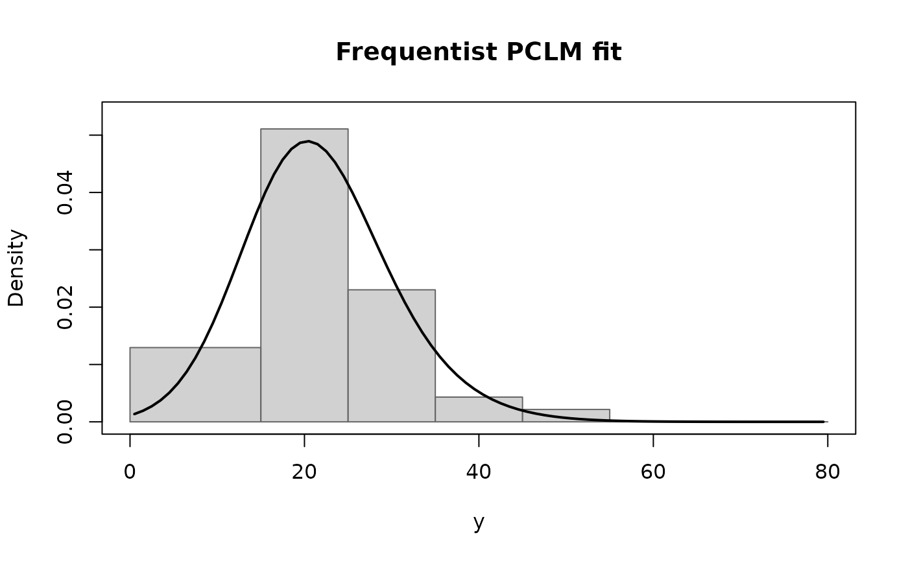

Frequentist penalised composite link model for grouped data
pclm.RdFits the model of Lambert and Eilers (2009) by penalised maximum likelihood. The smoothing parameter \(\tau\) is selected by the chosen information criterion when a grid of candidates is supplied.
Usage
pclm(m, wide_breaks,
a = NULL, b = NULL,
ngrid = 100L,
ndx = 17L, degree = 3L,
penalty_order = 3L,
tau = NULL,
select = c("BIC", "AIC"),
max_iter = 100L,
tol = 1e-7,
phi_start = NULL,
verbose = FALSE)Arguments
- m
Numeric vector of non-negative wide-bin counts.
- wide_breaks
Either a sorted vector of \(J + 1\) contiguous wide-bin breakpoints or a \(J \times 2\) matrix/data frame of (lower, upper) limits.
- a, b
Lower and upper limits of the support \((a, b)\). Defaults to the smallest and largest wide-bin limits.
- ngrid
Number of fine-grid intervals \(I\). Default 100.
- ndx
Number of equally-spaced knot intervals on \((a, b)\). The number of B-splines is
ndx + degree. Default 17.- degree
B-spline degree. Default 3.
- penalty_order
Order of the difference penalty. Default 3.
- tau
Smoothing parameter; either a scalar or a vector of candidate values.
NULL(default) uses an internal log-spaced grid of length 25.- select
Information criterion:
"BIC"(default) or"AIC".- max_iter, tol
Convergence controls for the penalised scoring algorithm.
- phi_start
Optional starting coefficient vector.
- verbose
Logical; print iteration progress.
Value
An object of class "pclm"; see pclmbayes-package.
References
Eilers, P. H. C. (2007). Ill-posed problems with counts, the composite link model and penalized likelihood. Statistical Modelling, 7(3), 239–254. (Original frequentist penalised PCLM.)
Lambert, P. and Eilers, P. H. C. (2009). Bayesian density estimation from grouped continuous data. CSDA, 53(4), 1388–1399. (Section 2, Eq. (2): the specific penalised-scoring form implemented here.)
Examples
data(bloodlead)
fit <- pclm(m = bloodlead$count,
wide_breaks = with(bloodlead, cbind(lower, upper)),
a = 0, b = 80, ngrid = 80, ndx = 17, degree = 3,
penalty_order = 3)
summary(fit)
#> Penalised composite link model (frequentist)
#> Call: pclm(m = bloodlead$count, wide_breaks = with(bloodlead, cbind(lower,
#> upper)), a = 0, b = 80, ngrid = 80, ndx = 17, degree = 3,
#> penalty_order = 3)
#>
#> Number of wide bins: 7 | total counts: 139
#> Fine grid:80intervals on (0, 80)
#> B-spline basis: K = 20 (degree = 3 )
#> Penalty order r = 3
#> Selected tau = 100 (BIC = 355.79, edf = 2.56)
#> Converged = TRUE in 13 iterations. log-likelihood = -171.582
#>
#> Fitted summary statistics of the latent density:
#> mean = 21.7395, sd = 8.5228
#> 5% 10% 25% 50% 75% 90% 95%
#> 8.6085 11.2664 15.8611 21.2147 26.9966 32.8015 36.6231
#>
#> Goodness of fit (observed vs fitted counts):
#> lower upper obs exp
#> 0 15 27 29.96
#> 15 25 71 63.63
#> 25 35 32 36.04
#> 35 45 6 8.12
#> 45 55 3 1.13
#> 55 65 0 0.11
#> 65 80 0 0.01
plot(fit)
